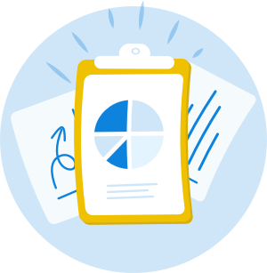

Recruit
Go find 12-20 participants who can help uncover the needs and goals of your users through interviews, diary studies, etc.
Who's involved:
- UX Designer, Product Manger
Timeline:
- 2-3 weeks prior to testing is preferable
Step-by-step
After you have identified the users you want to recruit based on the Plan and Gather stages, you can begin recruiting for your tests!
We use MailChimp in order to recruit our users, but there are plenty of other options to satisfy your email marketing needs. Here's how we do things:
1) Request
- Request a data pull of users that match your criteria for recruitment.
2) Upload
- Upload your list of users into MailChimp.
3) Create a template
- Create a template for the email you wish to send to your users. At this stage, we link potential participants to our booking software, YouCanBook.Me.
4) Campaigns
- Campaigns are how you email your user group with that fancy new template you’ve created. You can choose to send it to your whole list in one fell swoop, or you can send it in stages to different segments!
5) Wait
- Wait for the sessions to roll in! You should receive an email notification when sessions have been booked.
6) Calendar
- Calendar invites are the best way to organize your sessions, and will allow you to share sessions with others easily (if desired).
7) Contact participants
- Contact participants the week of their sessions to confirm their attendance (this is done automatically by YouCanBook.Me. If you are conducting remote testing, make sure you send the participants invites/links to any software they may need).
8) non-disclosure agreement
- Send all participants a non-disclosure agreement (we use RightSignature for this).
If you are unable to recruit (due to time / stealth):
You can use your own staff for research, as long as they meet the following criteria:
- They have not been involved in the generative stages of the product or feature you are testing.
- They would be considered "target users" of your product or feature.
Staff should never be used outside of generative research, and should only be used as an absolute last resort.